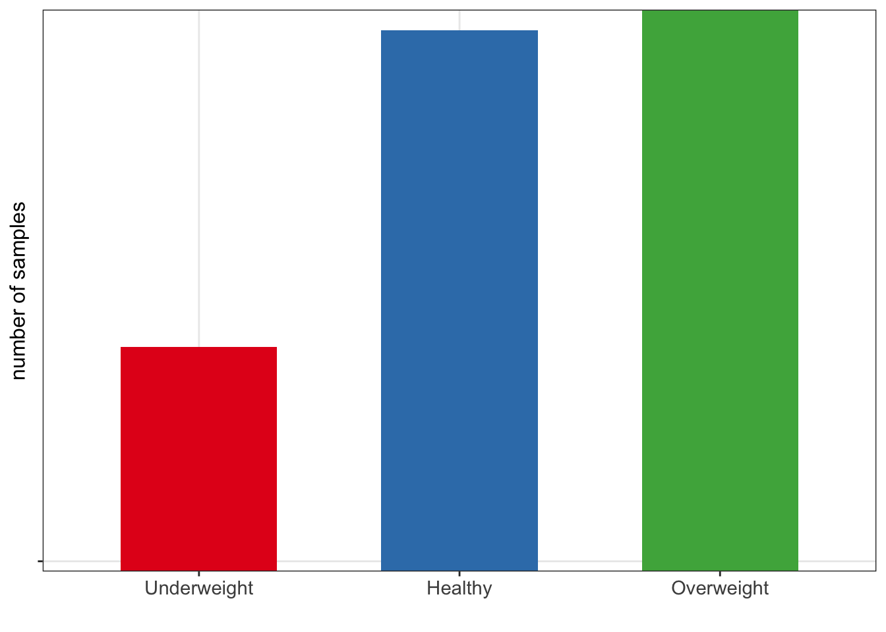
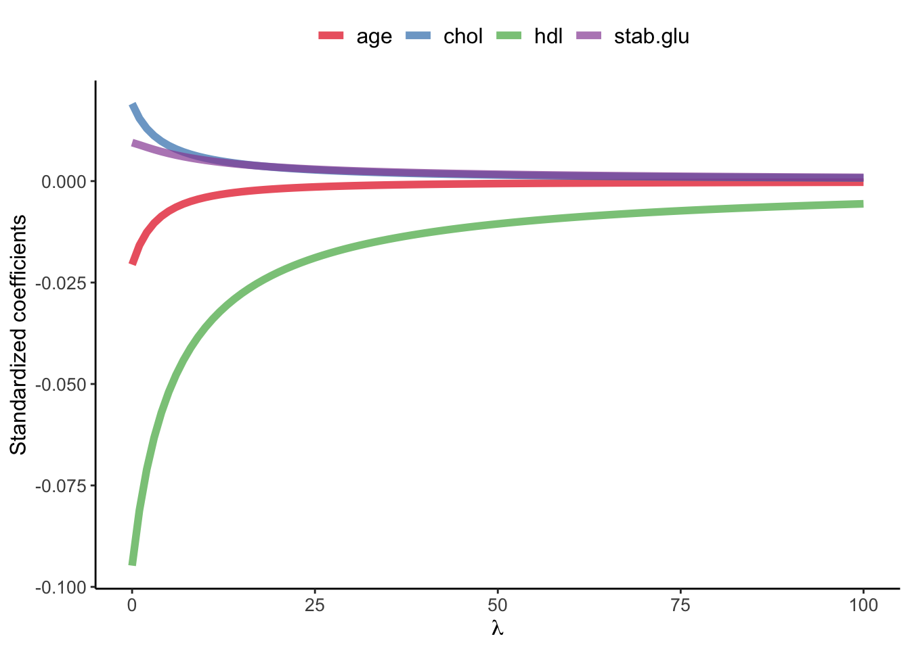
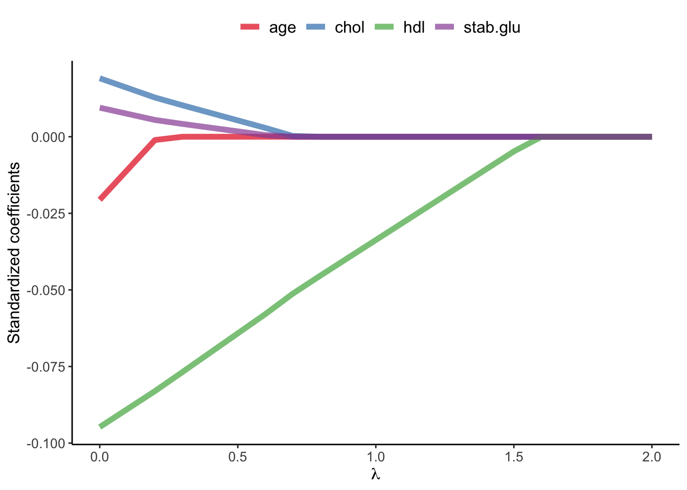
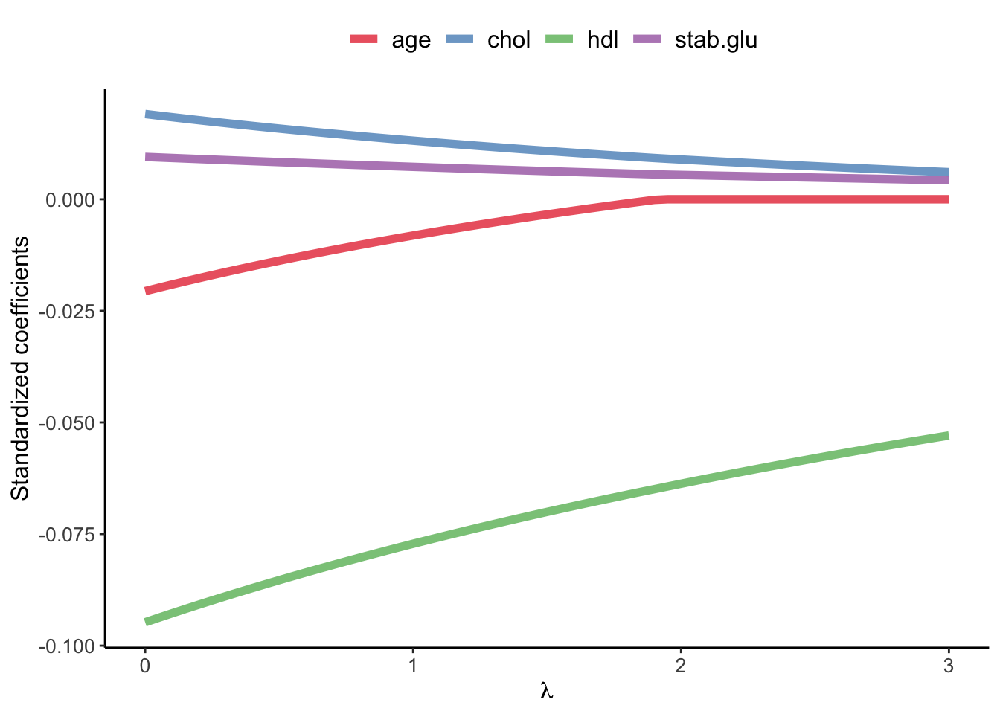
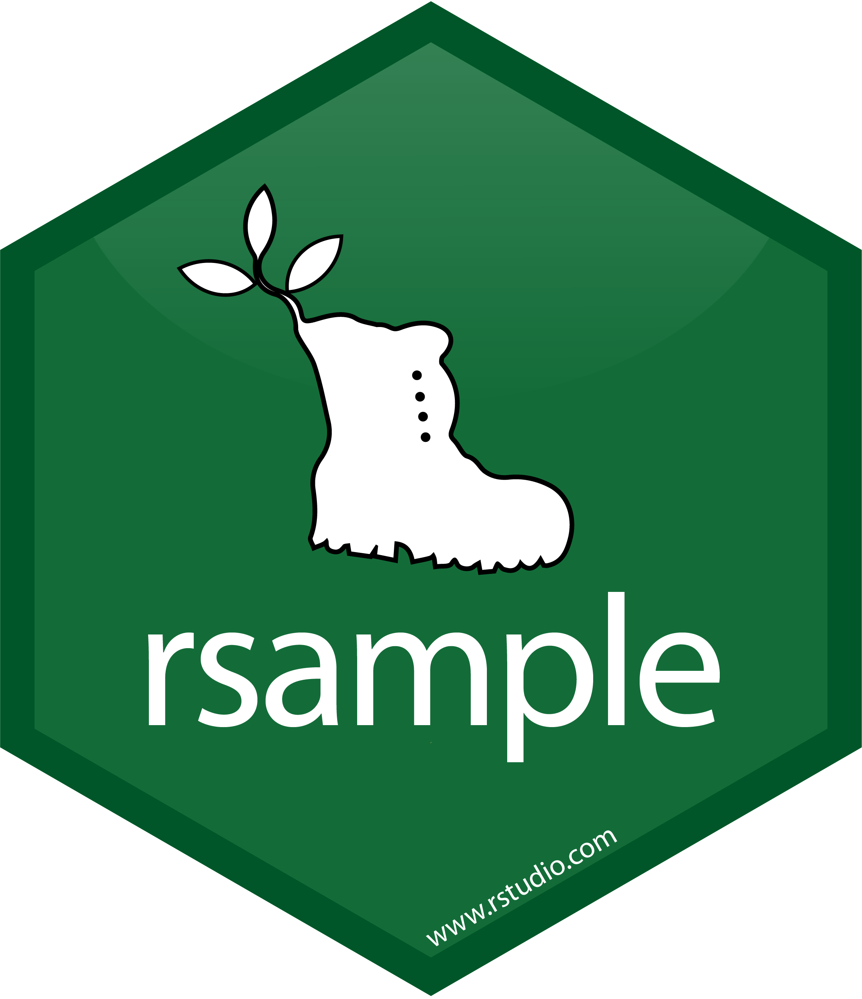

1 Introduction
- Quite often we are not only interested in building the best predictive model but we would also like to know which features are the key ones, e.g. which genes measurements allow us to tell healthy and tumor tissues apart.
- We have already seen some examples of feature selection when we talked about regression (e.g. forward selection) but these may not be best in the context of omics data, where typically number of features exceeds the number of samples the features are measures for (\(p \gg n\)).
- Additionally, features selection often goes hand in hand with the feature engineering part of the supervised learning.
- Let’s explain briefly what is feature engineering is, define main groups of feature selection and dive into regularized regression, one of the embedded methods of feature selection. Finally, we will put everything together into a more realistic predictive modeling case study using
tidymodelsframework.
1.1 Feature engineering
Feature engineering refers to techniques in machine learning that are used to prepare data for modeling and in turn improve the performance of machine learning models. Depending on the data, question of interest and modeling strategy such as chosen algorithm, these techniques may include:
- scaling of numerical features, e.g. scaling to 0 and 1 scale to prevent features with larger scales dominating the model. By default we used scaling with
kknn()function as it is based on calculating Euclidean distance. - normalization and/or transformations
- representing categorical variables with dummy variables or one-hot encoding to create numerical features. For instance a categorical variable
obesewith three possible vales (underweight, healthy, overweight) can be transformed into two binary variables: “is_healthy”, and “is_overweight”, where the value of each variable is 1 if the observation belongs to that category and 0 otherwise. Only \(k-1\) binary variables to encode \(k\) categories. In one-hot encoding \(k\) binary variables are created.
| id | obese | is_healthy | is_overweight |
|---|---|---|---|
| 902 | Overweight | 0 | 1 |
| 911 | Healthy | 1 | 0 |
| 916 | Healthy | 1 | 0 |
| 1171 | Underweight | 0 | 0 |
| 1185 | Healthy | 1 | 0 |
- handing missing data via imputations (mean, median, KNN-based) or deleting strategies such as list-wise deletion (complete-case analysis) or pair-wise deletion (available-case analysis)
- handling imbalanced data e.g. via down-sampling and up-sampling strategies or generating synthetic instances e.g. with SMOTE (Fernández et al. 2018) or ADASYN (He et al. 2008)

- feature aggregation: combining multiple related features into a single one, e.g. calculating average of a group
- feature interaction: creating new features by combining existing features e.g. creating BMI variables based on weight and height
- dimensionality reduction: reducing number of features in a data set by transforming them into a lower-dimensional space, e.g. with PCA
- filtering out irrelevant features e.g. using variance threshold or univariate statistics
- filtering out redundant features e.g. keeping only one of a group of highly correlated features
1.2 Feature selection
Feature selection is the process of selecting the most relevant and informative subset of features from a larger set of potential features in order to improve the performance and interpretability of a machine learning model. There are generally three main groups of feature selection methods:
- Filter methods use statistical measures to score the features and select the most relevant ones, e.g. based on correlation coefficient or \(\chi^2\) test. They tend to be computationally efficient but may overlook complex interactions between features and can be sensitive to the choice of metric used to evaluate the feature importance.
- Wrapper methods use a machine learning algorithm to evaluate the performance of different subsets of features, e.g. forward/backward feature selection. They tend to be computationally heavy.
- Embedded methods incorporate feature selection as part of the machine learning algorithm itself, e.g. regularized regression or Random Forest. These methods are computationally efficient and can be more accurate than filter methods.
1.3 Regularized regression
Regularized regression expands on the regression by adding a penalty term or terms to shrink the model coefficients of less important features towards zero. This can help to prevent overfitting and improve the accuracy of the predictive model. Depending on the penalty added, we talk about Ridge, Lasso or Elastic Nets regression.
Previously when talking about regression, we saw that the least squares fitting procedure estimates model coefficients \(\beta_0, \beta_1, \cdots, \beta_p\) using the values that minimize the residual sum of squares: \[RSS = \sum_{i=1}^{n} \left( y_i - \beta_0 - \sum_{i=1}^{p}\beta_jx_{ij} \right)^2 \tag{1.1}\]
In regularized regression the coefficients are estimated by minimizing slightly different quantity. In Ridge regression we estimate \(\hat\beta^{L}\) that minimizes \[\sum_{i=1}^{n} \left( y_i - \beta_0 - \sum_{i=1}^{p}\beta_jx_{ij} \right)^2 + \lambda \sum_{j=1}^{p}\beta_j^2 = RSS + \lambda \sum_{j=1}^{p}\beta_j^2 \tag{1.2}\]
where:
\(\lambda \ge 0\) is a tuning parameter to be determined separately e.g. via cross-validation
Equation 1.2 trades two different criteria:
- as with least squares, lasso regression seeks coefficient estimates that fit the data well, by making RSS small
- however, the second term \(\lambda \sum_{j=1}^{p}\beta_j^2\), called shrinkage penalty is small when \(\beta_1, \cdots, \beta_p\) are close to zero, so it has the effect of shrinking the estimates of \(\beta_j\) towards zero.
- the tuning parameter \(\lambda\) controls the relative impact of these two terms on the regression coefficient estimates
- when \(\lambda = 0\), the penalty term has no effect
- as \(\lambda \rightarrow \infty\) the impact of the shrinkage penalty grows and the ridge regression coefficient estimates approach zero
Code
library(glmnet)
library(latex2exp)
# select subset data
# and scale: since regression puts constraints on the size of the coefficient
data_input <- data_diabetes %>%
dplyr::select(BMI, chol, hdl, age, stab.glu) %>%
na.omit()
# fit ridge regression for a series of lambda values
# note: lambda values were chosen by experimenting to show lambda effect on beta coefficient estimates
x <- model.matrix(BMI ~., data = data_input)
y <- data_input %>% pull(BMI)
model <- glmnet(x, y, alpha=0, lambda = seq(0, 100, 1))
# plot beta estimates vs. lambda
betas <- model$beta %>% as.matrix() %>% t()
data_plot <- tibble(data.frame(lambda = model$lambda, betas)) %>%
dplyr::select(-"X.Intercept.") %>%
pivot_longer(-lambda, names_to = "variable", values_to = "beta")
data_plot %>%
ggplot(aes(x = lambda, y = beta, color = variable)) +
geom_line(linewidth = 2, alpha = 0.7) +
theme_classic() +
xlab(TeX("$\\lambda$")) +
ylab(TeX("Standardized coefficients")) +
scale_color_brewer(palette = "Set1") +
theme(legend.title = element_blank(), legend.position = "top", legend.text = element_text(size=12)) +
theme(axis.title = element_text(size = 12), axis.text = element_text(size = 10))
1.4 Bias-variance trade-off
Ridge regression’s advantages over least squares estimates stems from bias-variance trade-off, another fundamental concept in machine learning that.
- The bias-variance trade-off describes the relationship between model complexity, prediction accuracy, and the ability of the model to generalize to new data.
- Bias refers to the error that is introduced by approximating a real-life problem with a simplified model. A high bias model is one that makes overly simplistic assumptions about the underlying data, resulting in under-fitting and poor accuracy.
- Variance refers to the sensitivity of a model to fluctuations in the training data. A high variance model is one that is overly complex and captures noise in the training data, resulting in overfitting and poor generalization to new data.
- The goal of machine learning is to find a model with the right balance between bias and variance, which can generalize well to new data.
- The bias-variance trade-off can be visualized in terms of MSE, means squared error of the model. The MSE can be decomposed into: \[MSE(\hat\beta) := bias^2(\hat\beta) + Var(\hat\beta) + noise\]
- The irreducible error is the inherent noise in the data that cannot be reduced by any model, while the bias and variance terms can be reduced by choosing an appropriate model complexity. The trade-off lies in finding the right balance between bias and variance that minimizes the total MSE.
- In practice, this trade-off can be addressed by regularizing the model, selecting an appropriate model complexity, or by using ensemble methods that combine multiple models to reduce the variance (e.g. Random Forest). Ultimately, the goal is to find a model that is both accurate and generalization.

1.5 Ridge, Lasso and Elastic Nets
In Ridge regression we minimize: \[\sum_{i=1}^{n} \left( y_i - \beta_0 - \sum_{i=1}^{p}\beta_jx_{ij} \right)^2 + \lambda \sum_{j=1}^{p}\beta_j^2 = RSS + \lambda \sum_{j=1}^{p}\beta_j^2 \tag{1.3}\] where \(\lambda \sum_{j=1}^{p}\beta_j^2\) is also known as L2 regularization element or \(l_2\) penalty
In Lasso regression, that is Least Absolute Shrinkage and Selection Operator regression we change penalty term to absolute value of the regression coefficients: \[\sum_{i=1}^{n} \left( y_i - \beta_0 - \sum_{i=1}^{p}\beta_jx_{ij} \right)^2 + \lambda \sum_{j=1}^{p}|\beta_j| = RSS + \lambda \sum_{j=1}^{p}|\beta_j| \tag{1.4}\] where \(\lambda \sum_{j=1}^{p}|\beta_j|\) is also known as L1 regularization element or \(l_1\) penalty
Lasso regression was introduced to help model interpretation. With Ridge regression we improve model performance but unless \(\lambda = \infty\) all beta coefficients are non-zero, hence all variables remain in the model. By using \(l_1\) penalty we can force some of the coefficients estimates to be exactly equal to 0, hence perform variable selection
Code
library(glmnet)
library(latex2exp)
# select subset data
# and scale: since regression puts constraints on the size of the coefficient
data_input <- data_diabetes %>%
dplyr::select(BMI, chol, hdl, age, stab.glu) %>%
na.omit()
# fit ridge regression for a series of lambda values
# note: lambda values were chosen by experimenting to show lambda effect on beta coefficient estimates
x <- model.matrix(BMI ~., data = data_input)
y <- data_input %>% pull(BMI)
model <- glmnet(x, y, alpha=1, lambda = seq(0, 2, 0.1))
# plot beta estimates vs. lambda
betas <- model$beta %>% as.matrix() %>% t()
data_plot <- tibble(data.frame(lambda = model$lambda, betas)) %>%
dplyr::select(-"X.Intercept.") %>%
pivot_longer(-lambda, names_to = "variable", values_to = "beta")
data_plot %>%
ggplot(aes(x = lambda, y = beta, color = variable)) +
geom_line(linewidth = 2, alpha = 0.7) +
theme_classic() +
xlab(TeX("$\\lambda$")) +
ylab(TeX("Standardized coefficients")) +
scale_color_brewer(palette = "Set1") +
theme(legend.title = element_blank(), legend.position = "top", legend.text = element_text(size=12)) +
theme(axis.title = element_text(size = 12), axis.text = element_text(size = 10))
Elastic Net use both L1 and L2 penalties to try to find middle grounds by performing parameter shrinkage and variable selection. \[\sum_{i=1}^{n} \left( y_i - \beta_0 - \sum_{i=1}^{p}\beta_jx_{ij} \right)^2 + \lambda \sum_{j=1}^{p}|\beta_j| + \lambda \sum_{j=1}^{p}\beta_j^2 = RSS + \lambda \sum_{j=1}^{p}|\beta_j| + \lambda \sum_{j=1}^{p}\beta_j^2 \tag{1.5}\]
In the glmnet library we can fit Elastic Net by setting parameters \(\alpha\). Actually, under the hood glmnet minimizes a cost function: \[\sum_{i_=1}^{n}(y_i-\hat y_i)^2 + \lambda \left ( (1-\alpha) \sum_{j=1}^{p}\beta_j^2 + \alpha \sum_{j=1}^{p}|\beta_j|\right )\] where:
- \(n\) is the number of samples
- \(p\) is the number of parameters
- \(\lambda\), \(\alpha\) hyperparameters control the shrinkage
When \(\alpha = 0\) this corresponds to Ridge regression and when \(\alpha=1\) this corresponds to Lasso regression. A value of \(0 < \alpha < 1\) gives us Elastic Net regularization, combining both L1 and L2 regularization terms.
Code
library(glmnet)
library(latex2exp)
# select subset data
# and scale: since regression puts constraints on the size of the coefficient
data_input <- data_diabetes %>%
dplyr::select(BMI, chol, hdl, age, stab.glu) %>%
na.omit()
# fit ridge regression for a series of lambda values
# note: lambda values were chosen by experimenting to show lambda effect on beta coefficient estimates
x <- model.matrix(BMI ~., data = data_input)
y <- data_input %>% pull(BMI)
model <- glmnet(x, y, alpha=0.1, lambda = seq(0, 3, 0.05))
# plot beta estimates vs. lambda
betas <- model$beta %>% as.matrix() %>% t()
data_plot <- tibble(data.frame(lambda = model$lambda, betas)) %>%
dplyr::select(-"X.Intercept.") %>%
pivot_longer(-lambda, names_to = "variable", values_to = "beta")
data_plot %>%
ggplot(aes(x = lambda, y = beta, color = variable)) +
geom_line(linewidth = 2, alpha = 0.7) +
theme_classic() +
xlab(TeX("$\\lambda$")) +
ylab(TeX("Standardized coefficients")) +
scale_color_brewer(palette = "Set1") +
theme(legend.title = element_blank(), legend.position = "top", legend.text = element_text(size=12)) +
theme(axis.title = element_text(size = 12), axis.text = element_text(size = 10))
1.6 Tidymodels
We have seen that there are many common steps when using supervised learning for prediction, such as data splitting and parameters tuning. Over the years, some initiatives were taken to create a common framework for the machine learning tasks in R. A while back Max Kuhn was the main developer behind a popular caret package that among others enabled feature engineering and control of training parameters like cross-validation. In 2020 tidymodelsframework was introduced as a collection of R packages for modeling and machine learning using tidyverse principles, under a guidance of Max Kuhn and Hadley Wickham, author of tidyverse package.
| core package | function |
|---|---|
|  | provides infrastructure for efficient data splitting and resampling |
| parsnip is a tidy, unified interface to models that can be used to try a range of models without getting bogged down in the syntactical minutiae of the underlying packages | |
| recipes is a tidy interface to data pre-processing tools for feature engineering | |
| workflows bundle your pre-processing, modeling, and post-processing together | |
| tune helps you optimize the hyperparameters of your model and pre-processing steps | |
| yardstick measures the effectiveness of models using performance metrics |